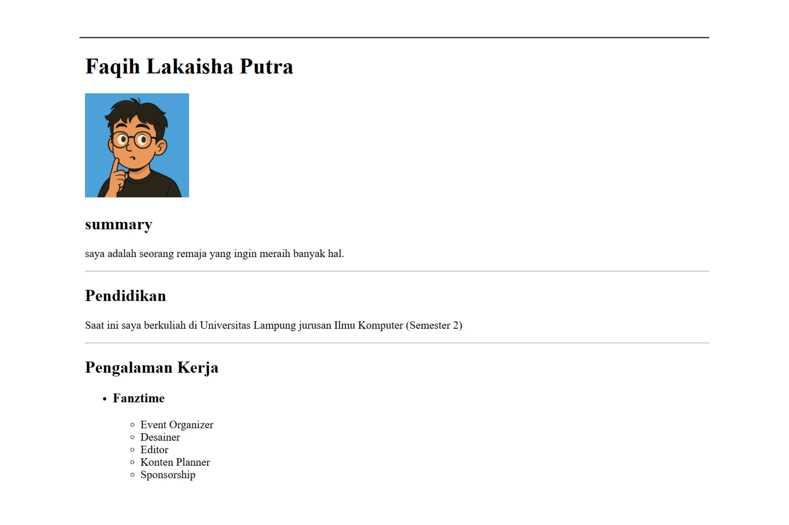
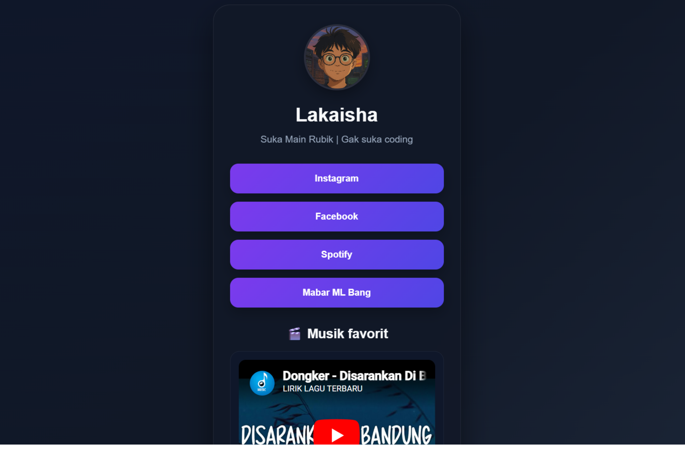
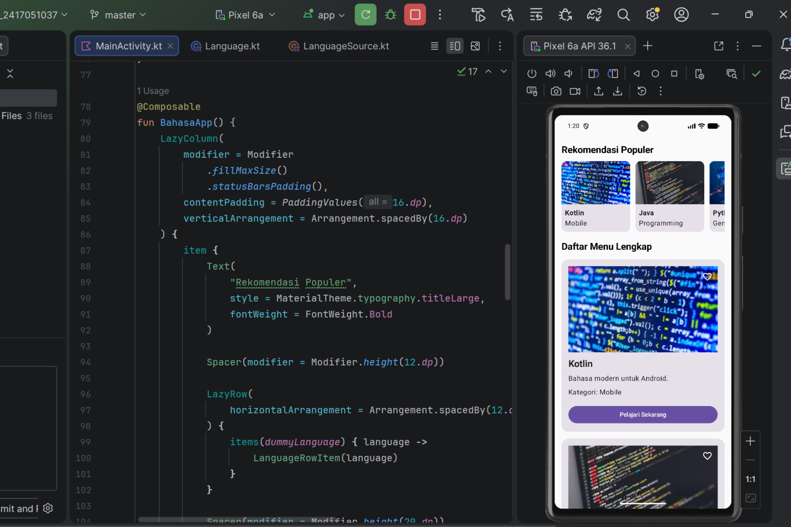

Featured Work

Coding
First Resume Project
Just a basic static CV website I made using HTML when I first started learning.
Visit Website →
Coding
College Web Assignment
This was a task for my Web Programming class at Unila. Used HTML and CSS to follow the assignment's layout.
Visit Website →
Coding
Mobile App Assignment
Another college project, this time for mobile development. Focused on making the UI work for a simple app.
Video
Balamcubes Content
Content I make for Balamcubes Rubik's shop. These short videos have reached millions of views on social media.
Design
Fanztime Posters
Design work for the Fanztime Rubik's community, mostly for online tournament announcements.
Design
Chess Tournament Poster
A poster I designed for a chess competition held by UKM Catur Unila.
Design
Rubiknesia Info Design
Infographic design about Rubik's Cubes for the Rubiknesia community.